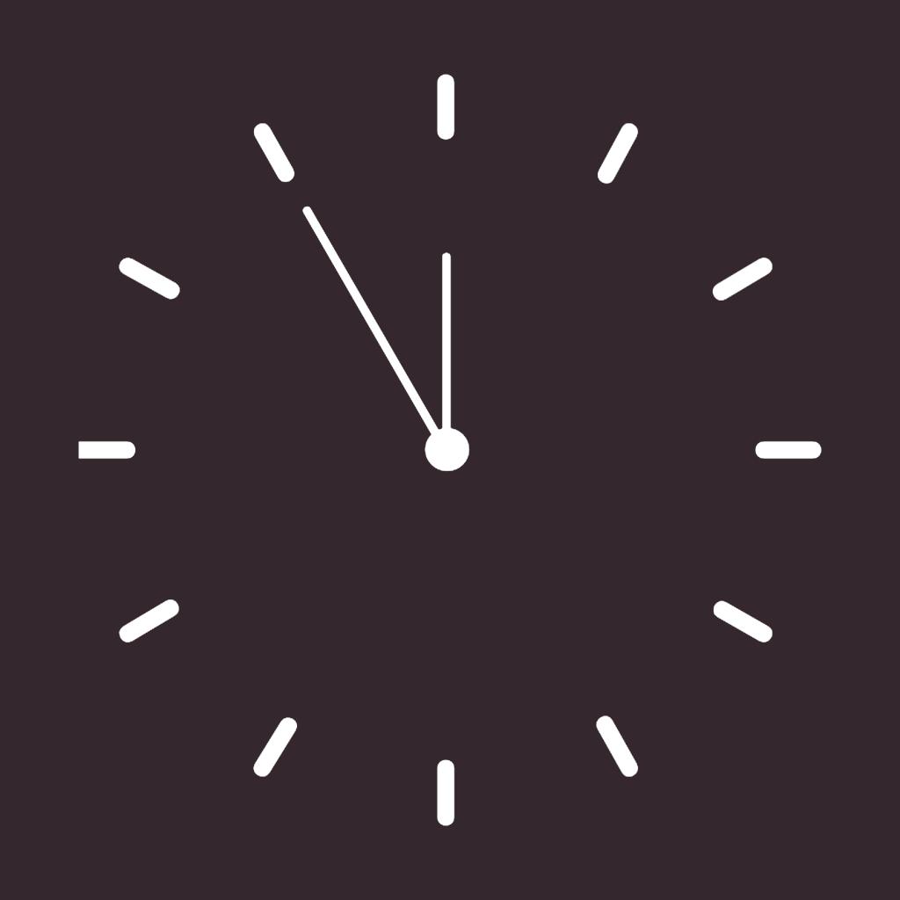
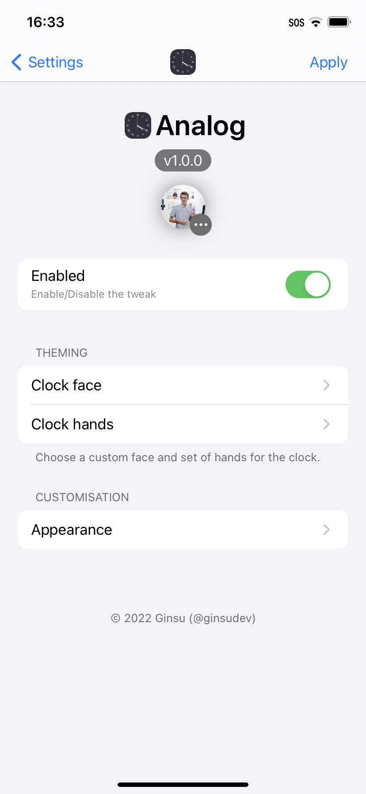
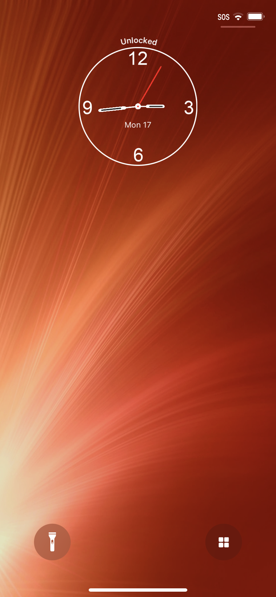
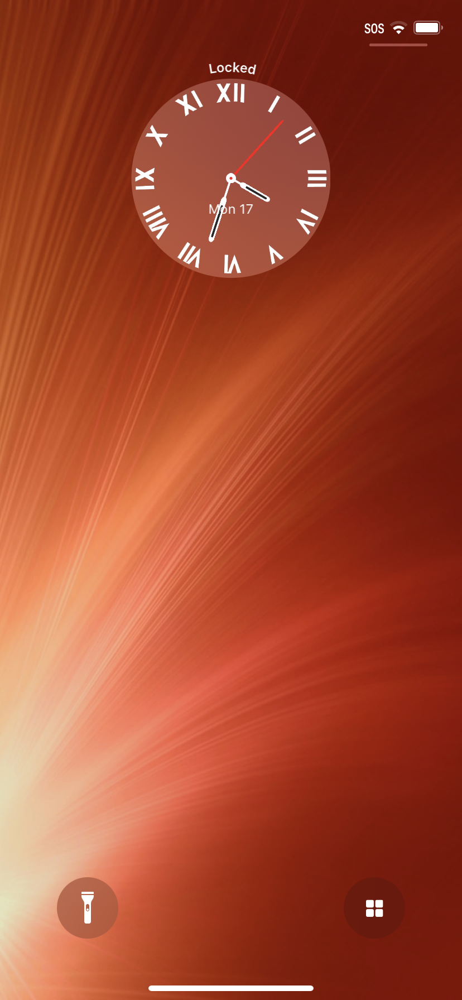
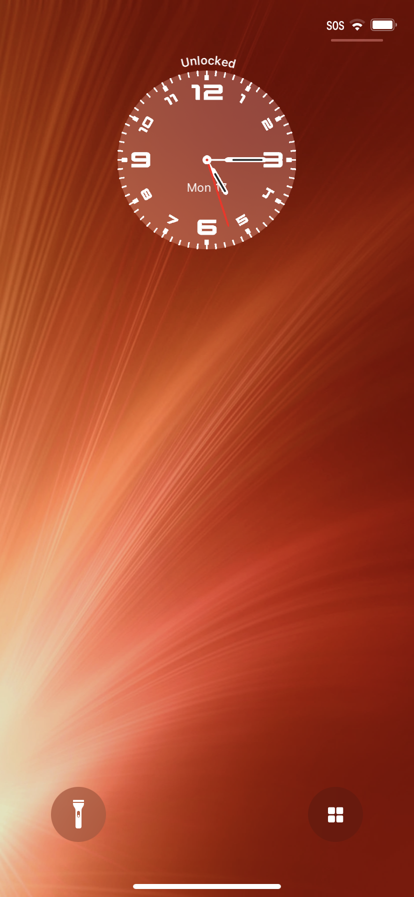
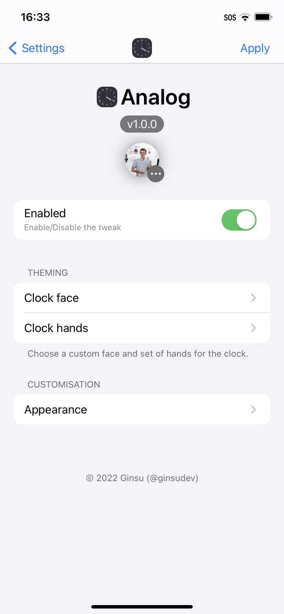
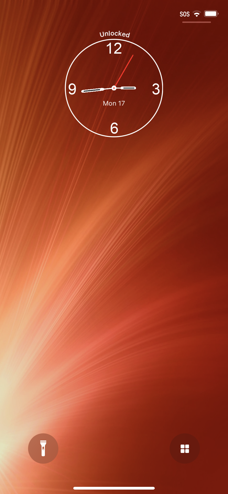
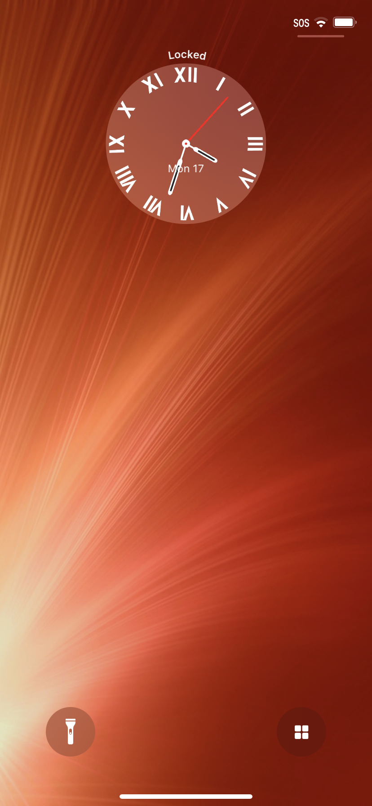
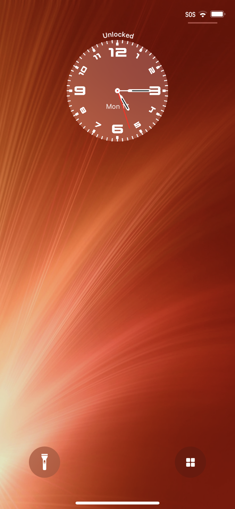

Twitter

Analog
Ginsu
Compatibility: This package is compatible with iOS iOS 14.0 to 15.9.
 
A theme able analog clock for your Lock Screen!
Supports iOS 14+ (iPhone and iPad)
If you prefer classy analog clocks and are bored of iOS's default digital clock, then Analog for you! Analog adds a fully customisable analog clock to the Lock Screen with the following features:
- Clock face and clock hand theming (Themers can design their own clock themes and put them up for download somewhere).
- Customisable date complication.
- A lock status indicator for devices with Face-ID.
- A digital time complication.
- Wallpaper colour detection.
- Supports translations.
- And many more customisable options!
For Theme creators:
Custom clock faces:
Custom clock faces should be 500x500px ".png" files named "Face.png". You should make a folder with the name of your theme, then place your "Face.png" inside. You can then place the folder you created in this directory "/Library/Application Support/Analog/Faces/".
Custom clock hands:
There is 4 main images needed to create a set of clock hands: "Center.png, Seconds.png, Hour.png, Minute.png". The dimensions for the files are as follows:
- Center.png = 25x25px
- Seconds.png = 16x120px
- Hour.png = 16x101px
- Minute.png = 16x120px
Similarly to custom clock faces, you need to create a folder with the name of your theme, then place those images inside the folder. After that, you can place the folder in the directory: "/Library/Application Support/Analog/Hands/".
Contact
Information
Developer
Ginsu
Version
1.1
Compatibility
iOS 14.0 to 15.9
Section
Tweaks
1.1
- Transitioned to libgscommon to handle most preference-related stuff for better maintenance.